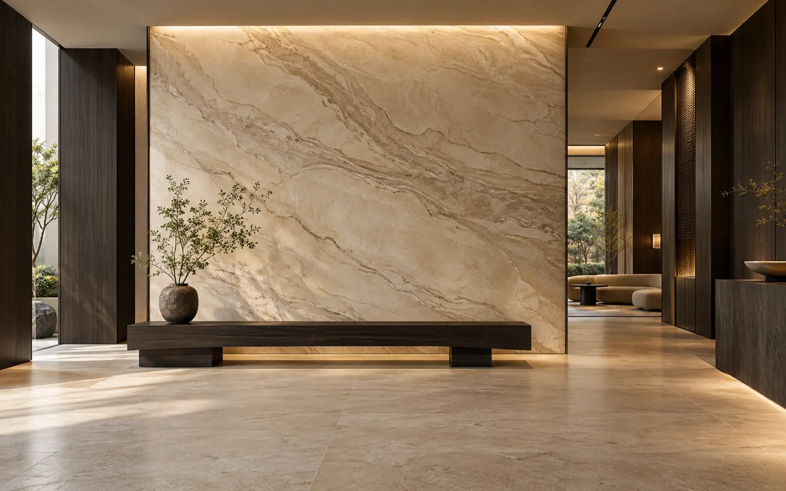
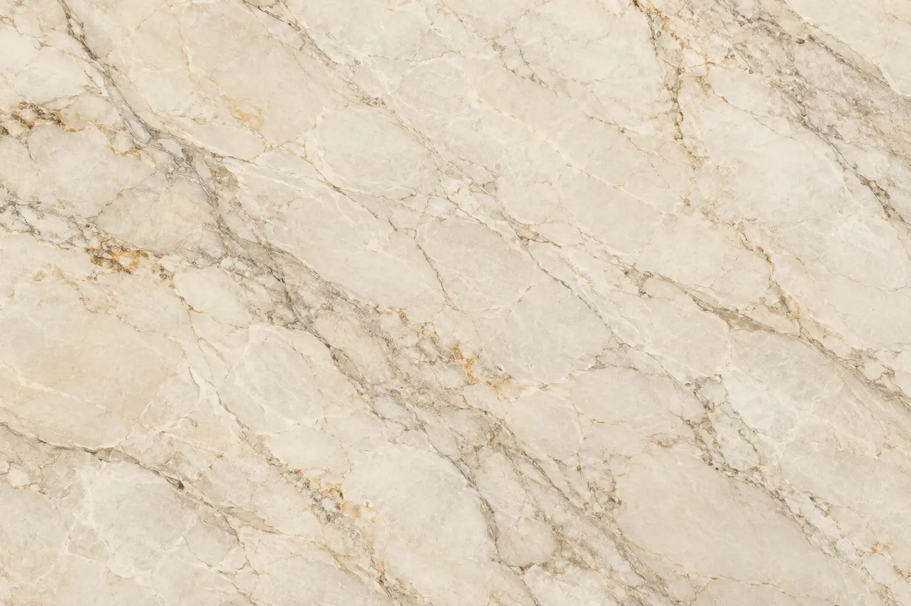
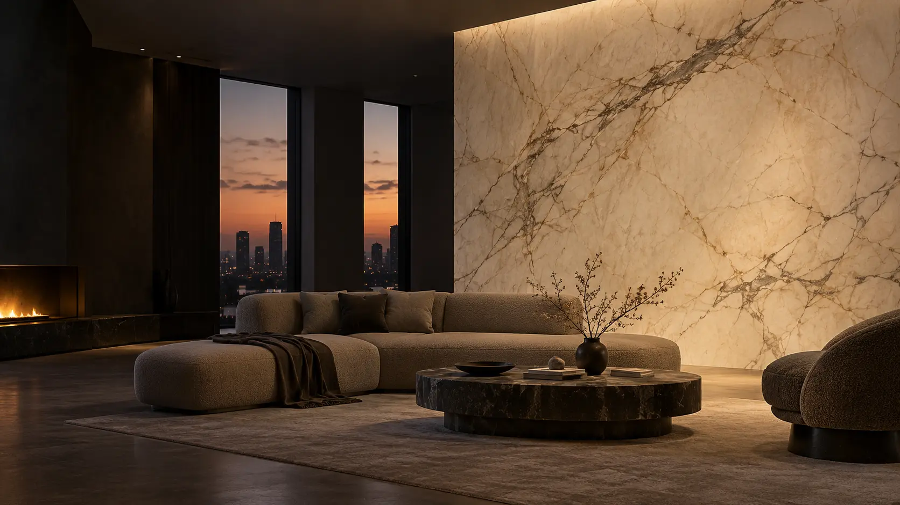

Светлый / демонстрационный
01Ivory Vein
Цена для макета*4 990 ₽ / м²
Гибкий мрамор · Сургут
Поверхности с выразительным рисунком для интерьеров, в которых материал задаёт настроение.
Камень меняет ощущение пространства.
Мы показываем его в масштабе интерьера и вблизи.
01 / Материал
Рисунок раскрывается по-разному: на большой плоскости и в деталях. Сначала почувствуйте масштаб, затем рассмотрите поверхность.


Изображения этого прототипа — визуализации направления, не фотографии конкретных товаров Marmix Flex.
02 / Фрагмент каталога
Светлая глубина, графичный контраст или тёплый природный ритм — три демонстрационных образца для проверки языка каталога.
* Названия, образцы и цены созданы для визуального прототипа. Они не описывают ассортимент и актуальные предложения Marmix Flex.

Визуализация / жилое пространство03 / Применение
Материал работает не только в образце. Его масштаб, свет и окружение создают цельное впечатление от пространства.
Посмотреть материалMarmix Flex / Сургут
Сравните фактуры, найдите свой оттенок и представьте новую поверхность в вашем пространстве.
Вернуться к материалам